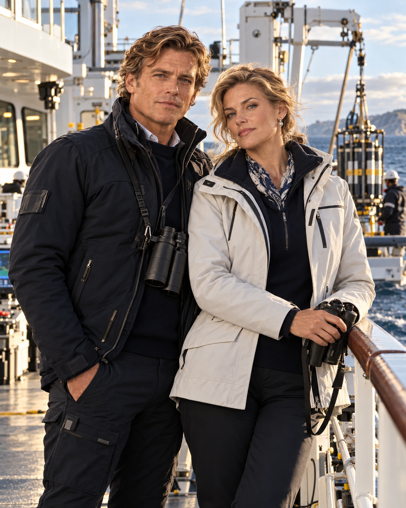
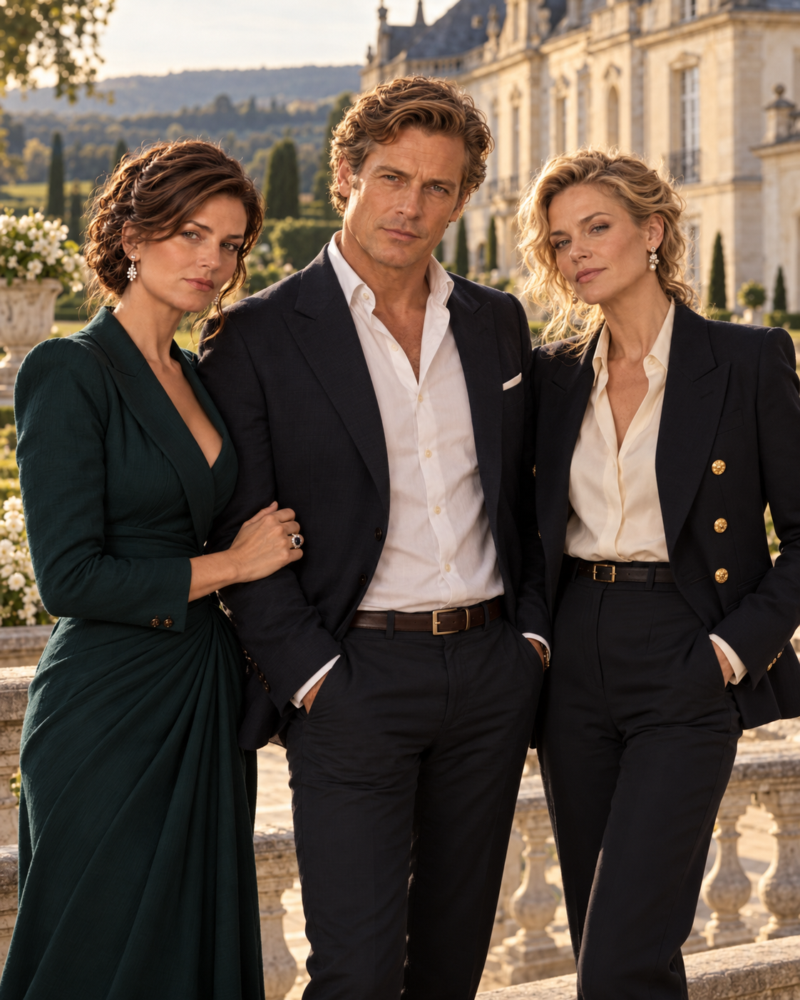

1
Uploaded Image 1
Identity pending — compare with reference collage
35C5F5CE-55D1-4C04-A563-9BB2B93901F7.pngView full-size image ↗These six images are numbered 1–6 in the order of the original GitHub filenames (alphabetically). Compare them to the user-approved reference collage lettered A–F. Click any image for the uncropped original.
assets/; none has been renamed, moved, substituted, or declared locked. This page records upload numbers only until your mapping is confirmed.35C5F5CE-55D1-4C04-A563-9BB2B93901F7.pngView full-size image ↗
56975F82-E41C-4EA1-B003-7233E0C0250B.pngView full-size image ↗
6518377B-457E-44F4-99CC-A4CDCDA881A3.pngView full-size image ↗
8CA6601C-036B-4B44-9BC4-A548A97A40E8.pngView full-size image ↗
9693B748-54BC-42A6-B814-5413ABC6A129.pngView full-size image ↗
B3099314-EF7F-471C-AFD7-5CFB086415A6.pngView full-size image ↗Send your matching pairs, for example: A1, B4, C2, D6, E3, F5 (this is an example only, not an asserted mapping). After approval, permanent descriptive asset paths, the Great House gallery and a locked Batch 5 visual canon record can be created from these exact original image files.